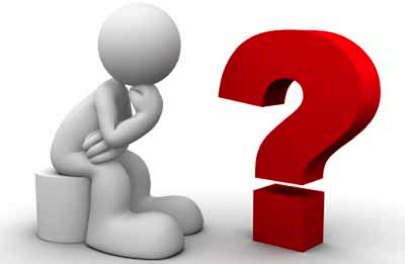

|  | Uitslag 27ste FAMILIEQUIZ (vrijdag 23 februari 2018) |
| Plaats | Nr | Ploegnaam | Totaal |
| 1 | 47 | Kleurenwist | 109 |
| 2 | 27 | De Herrezen Glorie | 107* |
| 3 | 29 | De Dummies | 107* |
| 4 | 18 | Discobar Fralo | 104* |
| 5 | 8 | Dhaese en Walput | 104* |
| 6 | 31 | De Quizketiers | 104* |
| 7 | 37 | Handelssoep met Letterkes | 104* |
| 8 | 9 | Botten | 104* |
| 9 | 14 | Tis kleir zand dawe spukken | 102* |
| 10 | 38 | ODISEE lerarenopleiding Waas | 102* |
| 11 | 7 | Veur de leute | 100 |
| 12 | 3 | Team tarrel | 99 |
| 13 | 5 | Ploeg zonder naam | 98 |
| 14 | 25 | S.CH.O.L. | 97 |
| 15 | 1 | RODA Gezoarde | 92* |
| 16 | 20 | Kzout duust kier'n zeggen | 92* |
| 17 | 23 | Kapelleken | 91* |
| 18 | 36 | De laatste show met Defauw | 91* |
| 19 | 24 | De Ranzige Rakkers | 91* |
| 20 | 13 | Vogels voor de kat | 90 |
| 21 | 4 | Roma Victor | 87 |
| 22 | 15 | Planet of the babes | 86 |
| 23 | 6 | Apaché | 85 |
| 24 | 45 | Zonder Defauw wordt het flauw | 84 |
| 25 | 26 | Team Noedel | 83 |
| 26 | 32 | Call Of Beauty | 79 |
| 27 | 39 | TMAG | 78* |
| 28 | 16 | De Kwistenbiebels | 78* |
| 29 | 41 | X-think | 75* |
| 30 | 17 | de Roadrunners | 75* |
| 31 | 28 | Tsjinglepipikoekoek | 74* |
| 32 | 22 | Gisteren wisten we't nog! | 74* |
| 33 | 48 | Orde van het spaghettimonster | 73 |
| 34 | 50 | Bad-ton | 72 |
| 35 | 44 | Ka | 71* |
| 36 | 12 | Hutseput | 71* |
| 37 | 42 | Tsjoe | 69 |
| 38 | 33 | fingerspitzengefühl | 68* |
| 39 | 11 | Winner Winner Chicken Dinner | 68* |
| 40 | 43 | Manoe and the gang | 67 |
| 41 | 30 | Tsémanie | 66 |
| 42 | 2 | het zonnebloempje | 64* |
| 43 | 46 | Manu gaat het eens navragen | 64* |
| 44 | 40 | Ja da was’t | 61 |
| 45 | 10 | Les Quizerables | 59 |
| 46 | 19 | *LoNeAnSoZo* | 58* |
| 47 | 35 | Club 96 | 58* |
| 48 | 21 | De bende van twijfel | 54 |
| 49 | 49 | Middengroep | 44 |
| 50 | 51 | Team Ashley | 39 |